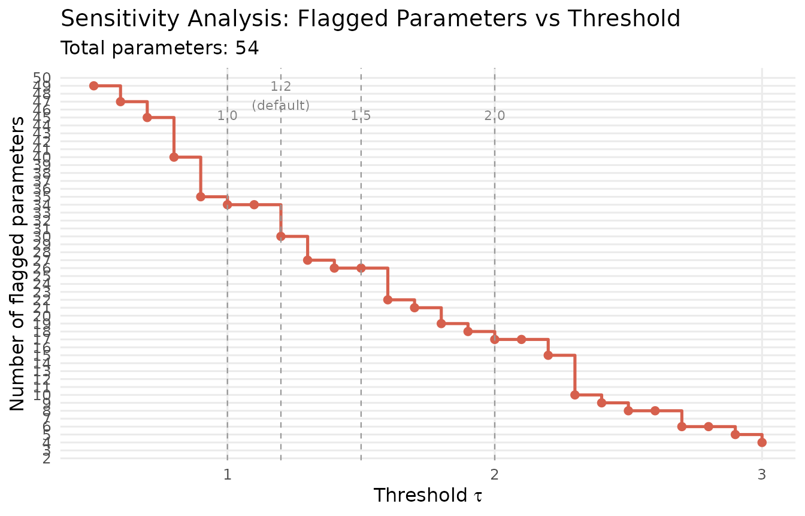
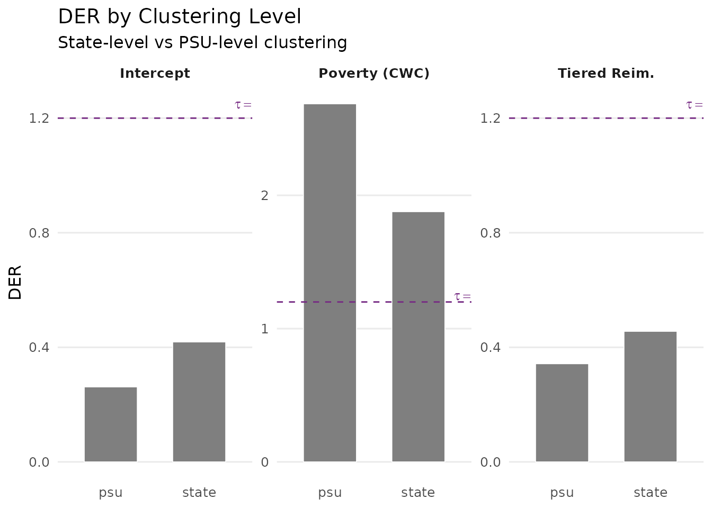
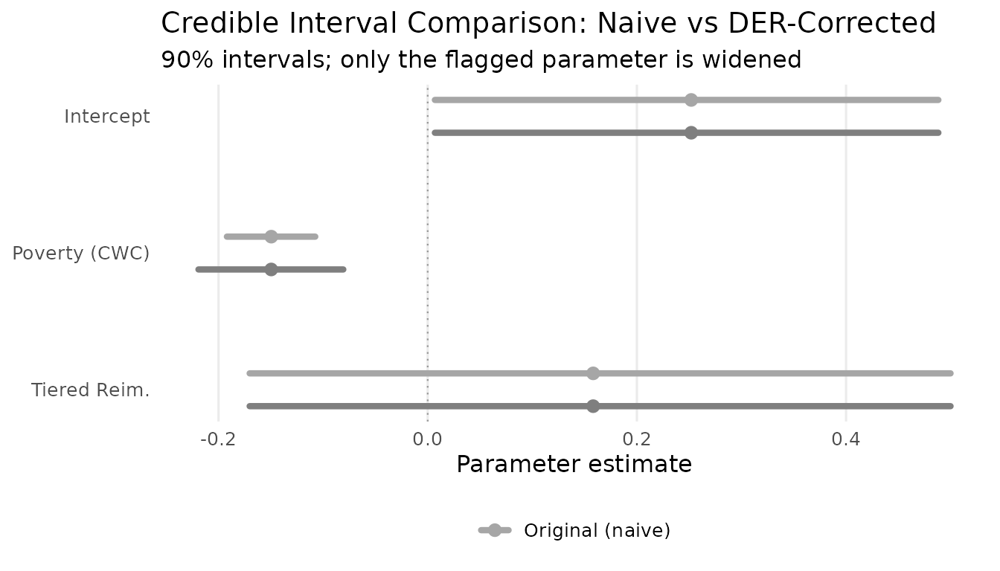
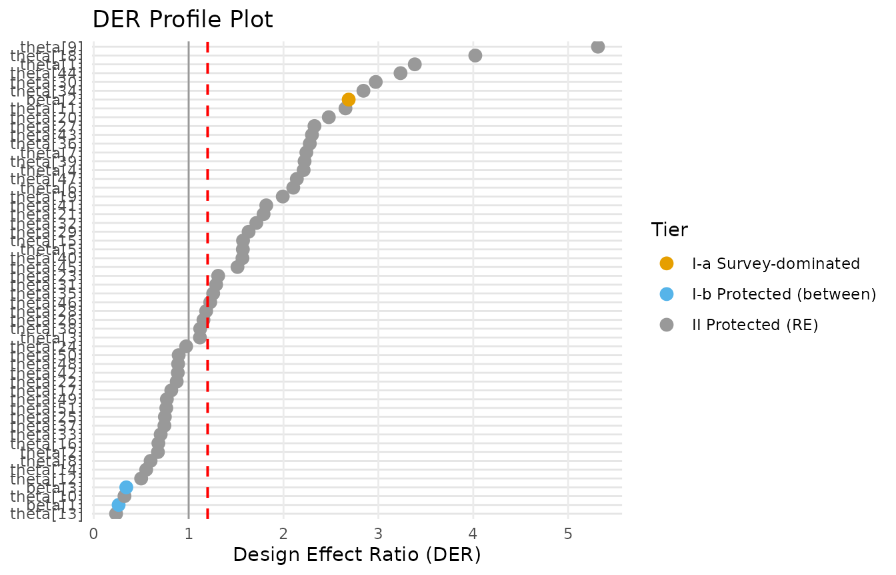
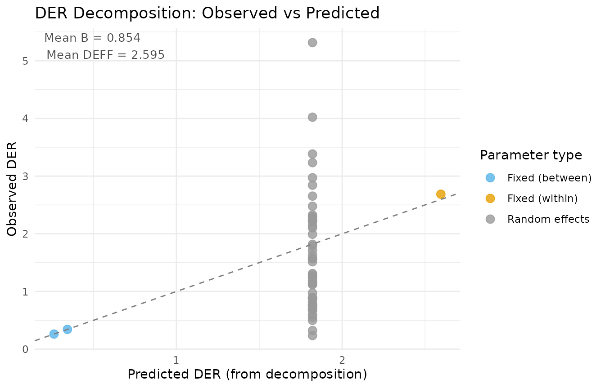
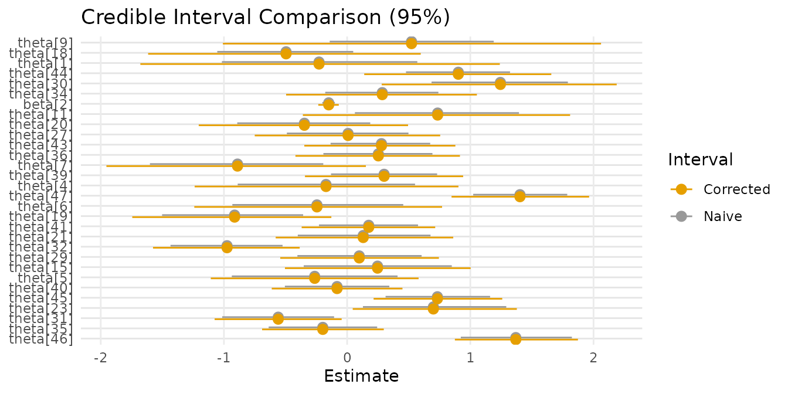

The Compute-Classify-Correct Pipeline
JoonHo Lee
2026-03-08
Source:vignettes/pipeline-in-depth.Rmd
pipeline-in-depth.RmdOverview
The svyder package implements a three-step diagnostic pipeline for Bayesian hierarchical models fitted to complex survey data. Each step addresses a specific question:
- Compute: How much does each parameter’s posterior variance differ from the design-consistent target?
- Classify: Which parameters exceed the tolerance threshold and need correction?
- Correct: How should we adjust the posterior draws for flagged parameters?
This pipeline can be executed as a single call to
der_diagnose() or as three modular steps that can be
inspected and customized individually.
By the end of this vignette you will be able to:
- Execute the full pipeline using both the all-in-one and step-by-step approaches.
- Understand each step’s inputs, outputs, and computational details.
- Perform sensitivity analysis across threshold values to assess the robustness of classification.
-
Compare DER across different clustering definitions
using
der_compare(). - Extract and use corrected posterior draws for downstream analysis.
The Three-Step Pipeline: Conceptual Overview
The pipeline processes posterior draws from a hierarchical Bayesian model through three sequential stages:
+------------------+
Posterior draws --> | Step 1: COMPUTE | --> DER values
Survey metadata | der_compute() | Sandwich matrices
+------------------+ Per-group diagnostics
|
v
+------------------+
Threshold tau ----> | Step 2: CLASSIFY | --> Tier assignments
| der_classify() | Flagged parameters
+------------------+
|
v
+------------------+
| Step 3: CORRECT | --> Corrected draws
| der_correct() | Scale factors
+------------------+Each step produces an updated svyder object that carries
forward all previous results. This design allows inspection at any
intermediate stage and makes the pipeline pipe-friendly.
Step 1: Compute — der_compute()
The compute step is the computational core of the pipeline. It constructs the sandwich variance matrix that respects the survey design, computes the MCMC posterior covariance , and calculates the per-parameter DER.
Required inputs
| Argument | Description |
|---|---|
x |
Posterior draws matrix (), where is the number of draws and is the total number of parameters |
y |
Response vector (length ) |
X |
Design matrix () |
group |
Integer group indicator ( to ) |
weights |
Survey weights (positive, length ) |
family |
Model family: "binomial" or
"gaussian"
|
sigma_theta |
Estimated random-effect standard deviation |
Optional inputs
| Argument | Description | Default |
|---|---|---|
psu |
PSU indicators for clustering | Same as group
|
sigma_e |
Residual SD (Gaussian only) | — |
param_types |
Character vector identifying each covariate as
"fe_within" or "fe_between"
|
Automatic detection |
beta_prior_sd |
Prior SD for fixed effects | 5 |
Running the compute step
data(nsece_demo)
obj <- der_compute(
nsece_demo$draws,
y = nsece_demo$y,
X = nsece_demo$X,
group = nsece_demo$group,
weights = nsece_demo$weights,
psu = nsece_demo$psu,
family = nsece_demo$family,
sigma_theta = nsece_demo$sigma_theta,
param_types = nsece_demo$param_types
)
obj
#> svyder diagnostic (54 parameters)
#> Family: binomial | N = 6785 | J = 51
#> DER range: [0.235, 5.315]
#> (not yet classified -- run der_classify())
#> Compute time: 0.092 secWhat the compute step produces
The resulting svyder object contains several
components:
# Per-parameter DER values
cat("DER values (first 5):\n")
#> DER values (first 5):
print(round(obj$der[1:5], 4))
#> beta[1] beta[2] beta[3] theta[1] theta[2]
#> 0.2618 2.6869 0.3427 3.3838 0.6759
# Per-group design effects
cat("\nPer-group DEFF (first 5 states):\n")
#>
#> Per-group DEFF (first 5 states):
print(round(obj$deff_j[1:5], 4))
#> group_1 group_2 group_3 group_4 group_5
#> 3.4800 2.4177 1.8786 2.7458 1.6052
# Per-group shrinkage factors
cat("\nPer-group shrinkage B (first 5 states):\n")
#>
#> Per-group shrinkage B (first 5 states):
print(round(obj$B_j[1:5], 4))
#> group_1 group_2 group_3 group_4 group_5
#> 0.6442 0.6072 0.5847 0.7195 0.7368
# Dimensions
cat("\nSandwich matrix dimension:", dim(obj$V_sand), "\n")
#>
#> Sandwich matrix dimension: 54 54
cat("MCMC covariance dimension:", dim(obj$sigma_mcmc), "\n")
#> MCMC covariance dimension: 54 54Under the hood
The compute step performs the following operations:
- Observed information: Computes the Hessian of the weighted log-posterior at the posterior mean.
- Clustered score matrix: Aggregates individual score contributions by PSU to form the score matrix .
- Sandwich variance: Forms .
- DER: Takes the elementwise ratio of diagonals: .
The computational cost is dominated by the matrix operations and scales as , where is the total number of parameters.
Step 2: Classify — der_classify()
The classify step assigns each parameter to a design-sensitivity tier and flags those whose DER exceeds the threshold .
The threshold
The threshold determines the boundary between “acceptable” and “needs correction.” The default is , meaning a parameter is flagged if its posterior variance would need to increase by more than 20% when the survey design is accounted for.
Running the classify step
obj <- der_classify(obj, tau = 1.2)
#> DER Classification (tau = 1.20)
#> Total parameters: 54
#> Flagged: 30 (55.6%)
#> Flagged parameters:
#> beta[2]: DER = 2.687 [I-a] -> CORRECT
#> theta[1]: DER = 3.384 [II] -> CORRECT
#> theta[4]: DER = 2.212 [II] -> CORRECT
#> theta[5]: DER = 1.571 [II] -> CORRECT
#> theta[6]: DER = 2.103 [II] -> CORRECT
#> theta[7]: DER = 2.241 [II] -> CORRECT
#> theta[9]: DER = 5.315 [II] -> CORRECT
#> theta[11]: DER = 2.653 [II] -> CORRECT
#> theta[15]: DER = 1.573 [II] -> CORRECT
#> theta[18]: DER = 4.022 [II] -> CORRECT
#> theta[19]: DER = 1.992 [II] -> CORRECT
#> theta[20]: DER = 2.477 [II] -> CORRECT
#> theta[21]: DER = 1.790 [II] -> CORRECT
#> theta[23]: DER = 1.311 [II] -> CORRECT
#> theta[27]: DER = 2.326 [II] -> CORRECT
#> theta[29]: DER = 1.632 [II] -> CORRECT
#> theta[30]: DER = 2.972 [II] -> CORRECT
#> theta[31]: DER = 1.290 [II] -> CORRECT
#> theta[32]: DER = 1.713 [II] -> CORRECT
#> theta[34]: DER = 2.842 [II] -> CORRECT
#> theta[35]: DER = 1.259 [II] -> CORRECT
#> theta[36]: DER = 2.277 [II] -> CORRECT
#> theta[39]: DER = 2.222 [II] -> CORRECT
#> theta[40]: DER = 1.567 [II] -> CORRECT
#> theta[41]: DER = 1.818 [II] -> CORRECT
#> theta[43]: DER = 2.300 [II] -> CORRECT
#> theta[44]: DER = 3.233 [II] -> CORRECT
#> theta[45]: DER = 1.515 [II] -> CORRECT
#> theta[46]: DER = 1.228 [II] -> CORRECT
#> theta[47]: DER = 2.141 [II] -> CORRECTExamining the classification
# Classification table for fixed effects
cls <- obj$classification
cls[cls$param_type != "re",
c("param_name", "param_type", "der", "tier", "tier_label",
"flagged", "action")]
#> param_name param_type der tier tier_label flagged action
#> 1 beta[1] fe_between 0.2617696 I-b Protected (between) FALSE retain
#> 2 beta[2] fe_within 2.6868825 I-a Survey-dominated TRUE CORRECT
#> 3 beta[3] fe_between 0.3427294 I-b Protected (between) FALSE retainThe three-tier structure emerges directly from the parameter types:
| Tier | Code | Condition | Typical DER |
|---|---|---|---|
| I-a | fe_within |
Within-cluster covariate | |
| I-b | fe_between |
Between-cluster covariate | |
| II | re |
Random effect |
The flagging uses strict inequality: triggers correction. A parameter with exactly at is not flagged.
Step 3: Correct — der_correct()
The correct step applies selective Cholesky correction to the flagged parameters, rescaling their posterior draws so that the marginal variance matches the sandwich variance. Unflagged parameters are left bitwise identical to the originals.
How the correction works
For each flagged parameter :
- Compute the scale factor: .
- Center the draws at the posterior mean.
- Multiply by .
- Re-center at the posterior mean.
This preserves the posterior mean while widening the credible interval by a factor of .
Running the correct step
obj <- der_correct(obj)Verifying the correction
# Scale factors (1.0 for unflagged, > 1 for flagged)
cat("Scale factors for fixed effects:\n")
#> Scale factors for fixed effects:
cat(sprintf(" beta[1] (intercept): %.4f %s\n",
obj$scale_factors[1],
ifelse(obj$scale_factors[1] > 1, "(corrected)", "(unchanged)")))
#> beta[1] (intercept): 1.0000 (unchanged)
cat(sprintf(" beta[2] (poverty_cwc): %.4f %s\n",
obj$scale_factors[2],
ifelse(obj$scale_factors[2] > 1, "(corrected)", "(unchanged)")))
#> beta[2] (poverty_cwc): 1.6392 (corrected)
cat(sprintf(" beta[3] (tiered_reim): %.4f %s\n",
obj$scale_factors[3],
ifelse(obj$scale_factors[3] > 1, "(corrected)", "(unchanged)")))
#> beta[3] (tiered_reim): 1.0000 (unchanged)
# Verify unflagged draws are identical
original <- obj$original_draws
corrected <- obj$corrected_draws
unchanged <- !obj$classification$flagged
cat(sprintf("\nUnflagged parameters unchanged: %s\n",
all(original[, unchanged] == corrected[, unchanged])))
#>
#> Unflagged parameters unchanged: TRUEPutting It Together: Two Approaches
Approach A: All-in-one with der_diagnose()
For most analyses, the all-in-one wrapper is the simplest entry point:
result_a <- der_diagnose(
nsece_demo$draws,
y = nsece_demo$y,
X = nsece_demo$X,
group = nsece_demo$group,
weights = nsece_demo$weights,
psu = nsece_demo$psu,
family = nsece_demo$family,
sigma_theta = nsece_demo$sigma_theta,
param_types = nsece_demo$param_types,
tau = 1.2
)Approach B: Step-by-step pipeline
For more control, call each function individually. The pipe-friendly design lets you inspect results at each stage:
result_b <- der_compute(
nsece_demo$draws,
y = nsece_demo$y,
X = nsece_demo$X,
group = nsece_demo$group,
weights = nsece_demo$weights,
psu = nsece_demo$psu,
family = nsece_demo$family,
sigma_theta = nsece_demo$sigma_theta,
param_types = nsece_demo$param_types
)
result_b <- der_classify(result_b, tau = 1.2, verbose = FALSE)
result_b <- der_correct(result_b)Verifying equivalence
Both approaches produce identical results:
cat("DER values match:", all.equal(result_a$der, result_b$der), "\n")
#> DER values match: TRUE
cat("Classifications match:",
all.equal(result_a$classification$flagged,
result_b$classification$flagged), "\n")
#> Classifications match: TRUE
cat("Corrected draws match:",
all.equal(as.matrix(result_a), as.matrix(result_b)), "\n")
#> Corrected draws match: TRUEThe step-by-step approach is preferred when you want to:
- Inspect intermediate sandwich matrices or per-group diagnostics.
- Try multiple threshold values without recomputing the sandwich.
- Skip correction and use DER only as a diagnostic.
Sensitivity Analysis: How Robust Is the Classification?
The classification depends on the choice of threshold
.
A natural question is: how sensitive are the results to this choice? The
der_sensitivity() function evaluates the number of flagged
parameters across a range of
values.
sens <- der_sensitivity(result_a, tau_range = seq(0.5, 3.0, by = 0.1))
sens[, c("tau", "n_flagged", "pct_flagged")]
#> tau n_flagged pct_flagged
#> 1 0.5 49 0.90740741
#> 2 0.6 47 0.87037037
#> 3 0.7 45 0.83333333
#> 4 0.8 40 0.74074074
#> 5 0.9 35 0.64814815
#> 6 1.0 34 0.62962963
#> 7 1.1 34 0.62962963
#> 8 1.2 30 0.55555556
#> 9 1.3 27 0.50000000
#> 10 1.4 26 0.48148148
#> 11 1.5 26 0.48148148
#> 12 1.6 22 0.40740741
#> 13 1.7 21 0.38888889
#> 14 1.8 19 0.35185185
#> 15 1.9 18 0.33333333
#> 16 2.0 17 0.31481481
#> 17 2.1 17 0.31481481
#> 18 2.2 15 0.27777778
#> 19 2.3 10 0.18518519
#> 20 2.4 9 0.16666667
#> 21 2.5 8 0.14814815
#> 22 2.6 8 0.14814815
#> 23 2.7 6 0.11111111
#> 24 2.8 6 0.11111111
#> 25 2.9 5 0.09259259
#> 26 3.0 4 0.07407407Visualizing threshold sensitivity
if (requireNamespace("ggplot2", quietly = TRUE)) {
library(ggplot2)
ggplot(sens, aes(x = tau, y = n_flagged)) +
geom_step(colour = pal["tier_ia"], linewidth = 0.9) +
geom_point(colour = pal["tier_ia"], size = 2) +
geom_vline(xintercept = c(1.0, 1.2, 1.5, 2.0),
linetype = "dashed", colour = "grey60", linewidth = 0.4) +
annotate("text", x = c(1.0, 1.2, 1.5, 2.0),
y = rep(max(sens$n_flagged) * 0.9, 4),
label = c("1.0", "1.2\n(default)", "1.5", "2.0"),
colour = "grey50", size = 3, vjust = -0.5) +
scale_y_continuous(breaks = seq(0, max(sens$n_flagged) + 1, by = 1)) +
labs(x = expression(paste("Threshold ", tau)),
y = "Number of flagged parameters",
title = "Sensitivity Analysis: Flagged Parameters vs Threshold",
subtitle = sprintf("Total parameters: %d", length(result_a$der))) +
theme_minimal(base_size = 12) +
theme(panel.grid.minor = element_blank())
}
Number of flagged parameters as a function of the threshold tau. The step pattern reveals that the classification is highly robust: only one parameter (poverty_cwc) is flagged across a wide range of thresholds. The vertical dashed lines mark commonly used threshold values.
Identifying the stable region
The “stable region” is the range of values over which the set of flagged parameters does not change. In this example, the poverty coefficient is flagged at every threshold below its DER value, and no other parameters enter the flagged set. This stability reflects the sharp separation between within-cluster and other parameter types in the NSECE.
# At which thresholds does poverty_cwc enter/leave?
for (i in seq_len(nrow(sens))) {
params_i <- sens$flagged_params[[i]]
if (length(params_i) > 0) {
cat(sprintf("tau = %.1f: flagged = {%s}\n",
sens$tau[i], paste(params_i, collapse = ", ")))
}
}
#> tau = 0.5: flagged = {beta[2], theta[1], theta[2], theta[3], theta[4], theta[5], theta[6], theta[7], theta[8], theta[9], theta[11], theta[14], theta[15], theta[16], theta[17], theta[18], theta[19], theta[20], theta[21], theta[22], theta[23], theta[24], theta[25], theta[26], theta[27], theta[28], theta[29], theta[30], theta[31], theta[32], theta[33], theta[34], theta[35], theta[36], theta[37], theta[38], theta[39], theta[40], theta[41], theta[42], theta[43], theta[44], theta[45], theta[46], theta[47], theta[48], theta[49], theta[50], theta[51]}
#> tau = 0.6: flagged = {beta[2], theta[1], theta[2], theta[3], theta[4], theta[5], theta[6], theta[7], theta[9], theta[11], theta[15], theta[16], theta[17], theta[18], theta[19], theta[20], theta[21], theta[22], theta[23], theta[24], theta[25], theta[26], theta[27], theta[28], theta[29], theta[30], theta[31], theta[32], theta[33], theta[34], theta[35], theta[36], theta[37], theta[38], theta[39], theta[40], theta[41], theta[42], theta[43], theta[44], theta[45], theta[46], theta[47], theta[48], theta[49], theta[50], theta[51]}
#> tau = 0.7: flagged = {beta[2], theta[1], theta[3], theta[4], theta[5], theta[6], theta[7], theta[9], theta[11], theta[15], theta[17], theta[18], theta[19], theta[20], theta[21], theta[22], theta[23], theta[24], theta[25], theta[26], theta[27], theta[28], theta[29], theta[30], theta[31], theta[32], theta[33], theta[34], theta[35], theta[36], theta[37], theta[38], theta[39], theta[40], theta[41], theta[42], theta[43], theta[44], theta[45], theta[46], theta[47], theta[48], theta[49], theta[50], theta[51]}
#> tau = 0.8: flagged = {beta[2], theta[1], theta[3], theta[4], theta[5], theta[6], theta[7], theta[9], theta[11], theta[15], theta[17], theta[18], theta[19], theta[20], theta[21], theta[22], theta[23], theta[24], theta[26], theta[27], theta[28], theta[29], theta[30], theta[31], theta[32], theta[34], theta[35], theta[36], theta[38], theta[39], theta[40], theta[41], theta[42], theta[43], theta[44], theta[45], theta[46], theta[47], theta[48], theta[50]}
#> tau = 0.9: flagged = {beta[2], theta[1], theta[3], theta[4], theta[5], theta[6], theta[7], theta[9], theta[11], theta[15], theta[18], theta[19], theta[20], theta[21], theta[23], theta[24], theta[26], theta[27], theta[28], theta[29], theta[30], theta[31], theta[32], theta[34], theta[35], theta[36], theta[38], theta[39], theta[40], theta[41], theta[43], theta[44], theta[45], theta[46], theta[47]}
#> tau = 1.0: flagged = {beta[2], theta[1], theta[3], theta[4], theta[5], theta[6], theta[7], theta[9], theta[11], theta[15], theta[18], theta[19], theta[20], theta[21], theta[23], theta[26], theta[27], theta[28], theta[29], theta[30], theta[31], theta[32], theta[34], theta[35], theta[36], theta[38], theta[39], theta[40], theta[41], theta[43], theta[44], theta[45], theta[46], theta[47]}
#> tau = 1.1: flagged = {beta[2], theta[1], theta[3], theta[4], theta[5], theta[6], theta[7], theta[9], theta[11], theta[15], theta[18], theta[19], theta[20], theta[21], theta[23], theta[26], theta[27], theta[28], theta[29], theta[30], theta[31], theta[32], theta[34], theta[35], theta[36], theta[38], theta[39], theta[40], theta[41], theta[43], theta[44], theta[45], theta[46], theta[47]}
#> tau = 1.2: flagged = {beta[2], theta[1], theta[4], theta[5], theta[6], theta[7], theta[9], theta[11], theta[15], theta[18], theta[19], theta[20], theta[21], theta[23], theta[27], theta[29], theta[30], theta[31], theta[32], theta[34], theta[35], theta[36], theta[39], theta[40], theta[41], theta[43], theta[44], theta[45], theta[46], theta[47]}
#> tau = 1.3: flagged = {beta[2], theta[1], theta[4], theta[5], theta[6], theta[7], theta[9], theta[11], theta[15], theta[18], theta[19], theta[20], theta[21], theta[23], theta[27], theta[29], theta[30], theta[32], theta[34], theta[36], theta[39], theta[40], theta[41], theta[43], theta[44], theta[45], theta[47]}
#> tau = 1.4: flagged = {beta[2], theta[1], theta[4], theta[5], theta[6], theta[7], theta[9], theta[11], theta[15], theta[18], theta[19], theta[20], theta[21], theta[27], theta[29], theta[30], theta[32], theta[34], theta[36], theta[39], theta[40], theta[41], theta[43], theta[44], theta[45], theta[47]}
#> tau = 1.5: flagged = {beta[2], theta[1], theta[4], theta[5], theta[6], theta[7], theta[9], theta[11], theta[15], theta[18], theta[19], theta[20], theta[21], theta[27], theta[29], theta[30], theta[32], theta[34], theta[36], theta[39], theta[40], theta[41], theta[43], theta[44], theta[45], theta[47]}
#> tau = 1.6: flagged = {beta[2], theta[1], theta[4], theta[6], theta[7], theta[9], theta[11], theta[18], theta[19], theta[20], theta[21], theta[27], theta[29], theta[30], theta[32], theta[34], theta[36], theta[39], theta[41], theta[43], theta[44], theta[47]}
#> tau = 1.7: flagged = {beta[2], theta[1], theta[4], theta[6], theta[7], theta[9], theta[11], theta[18], theta[19], theta[20], theta[21], theta[27], theta[30], theta[32], theta[34], theta[36], theta[39], theta[41], theta[43], theta[44], theta[47]}
#> tau = 1.8: flagged = {beta[2], theta[1], theta[4], theta[6], theta[7], theta[9], theta[11], theta[18], theta[19], theta[20], theta[27], theta[30], theta[34], theta[36], theta[39], theta[41], theta[43], theta[44], theta[47]}
#> tau = 1.9: flagged = {beta[2], theta[1], theta[4], theta[6], theta[7], theta[9], theta[11], theta[18], theta[19], theta[20], theta[27], theta[30], theta[34], theta[36], theta[39], theta[43], theta[44], theta[47]}
#> tau = 2.0: flagged = {beta[2], theta[1], theta[4], theta[6], theta[7], theta[9], theta[11], theta[18], theta[20], theta[27], theta[30], theta[34], theta[36], theta[39], theta[43], theta[44], theta[47]}
#> tau = 2.1: flagged = {beta[2], theta[1], theta[4], theta[6], theta[7], theta[9], theta[11], theta[18], theta[20], theta[27], theta[30], theta[34], theta[36], theta[39], theta[43], theta[44], theta[47]}
#> tau = 2.2: flagged = {beta[2], theta[1], theta[4], theta[7], theta[9], theta[11], theta[18], theta[20], theta[27], theta[30], theta[34], theta[36], theta[39], theta[43], theta[44]}
#> tau = 2.3: flagged = {beta[2], theta[1], theta[9], theta[11], theta[18], theta[20], theta[27], theta[30], theta[34], theta[44]}
#> tau = 2.4: flagged = {beta[2], theta[1], theta[9], theta[11], theta[18], theta[20], theta[30], theta[34], theta[44]}
#> tau = 2.5: flagged = {beta[2], theta[1], theta[9], theta[11], theta[18], theta[30], theta[34], theta[44]}
#> tau = 2.6: flagged = {beta[2], theta[1], theta[9], theta[11], theta[18], theta[30], theta[34], theta[44]}
#> tau = 2.7: flagged = {theta[1], theta[9], theta[18], theta[30], theta[34], theta[44]}
#> tau = 2.8: flagged = {theta[1], theta[9], theta[18], theta[30], theta[34], theta[44]}
#> tau = 2.9: flagged = {theta[1], theta[9], theta[18], theta[30], theta[44]}
#> tau = 3.0: flagged = {theta[1], theta[9], theta[18], theta[44]}When should you change ?
Guidelines for threshold selection:
- : Flag any parameter with DER above 1. Conservative — corrects even small design effects. Appropriate when exact coverage calibration is paramount.
- (default): The posterior variance would need to increase by at least 20%. Balances sensitivity and specificity.
- –: Only large design effects trigger correction. Appropriate when you want to preserve model-based inference and correct only the most egregious cases.
The sensitivity analysis helps you verify that your substantive conclusions do not change across a reasonable range of thresholds.
Cross-Clustering Comparison: der_compare()
The survey design may involve multiple levels of clustering. In the NSECE, observations are clustered within PSUs (geographic areas) that are themselves nested within states. The choice of clustering level for the sandwich variance can affect the DER values.
The der_compare() function computes DER under different
clustering definitions and presents the results side by side:
comp <- der_compare(
nsece_demo$draws,
clusters = list(
state = nsece_demo$group,
psu = nsece_demo$psu
),
y = nsece_demo$y,
X = nsece_demo$X,
group = nsece_demo$group,
weights = nsece_demo$weights,
family = nsece_demo$family,
sigma_theta = nsece_demo$sigma_theta,
param_types = nsece_demo$param_types
)
# Show fixed effects comparison
fe_comp <- comp[grepl("^beta", comp$param), ]
fe_comp
#> param cluster_name der
#> 1 beta[1] state 0.4187440
#> 2 beta[2] state 1.8775928
#> 3 beta[3] state 0.4559050
#> 55 beta[1] psu 0.2617696
#> 56 beta[2] psu 2.6868825
#> 57 beta[3] psu 0.3427294Visualizing cross-clustering results
if (requireNamespace("ggplot2", quietly = TRUE)) {
library(ggplot2)
# Focus on fixed effects for clarity
fe_comp$param_label <- factor(
fe_comp$param,
levels = unique(fe_comp$param),
labels = c("Intercept", "Poverty (CWC)", "Tiered Reim.")
)
ggplot(fe_comp, aes(x = cluster_name, y = der, fill = cluster_name)) +
geom_col(width = 0.6, colour = "white", linewidth = 0.3) +
geom_hline(yintercept = 1.2, linetype = "dashed",
colour = pal["threshold"], linewidth = 0.5) +
annotate("text", x = 2.4, y = 1.25,
label = expression(tau == 1.2),
colour = pal["threshold"], size = 3.5, hjust = 0) +
facet_wrap(~ param_label, scales = "free_y", nrow = 1) +
scale_fill_manual(
values = c("state" = pal["tier_ib"], "psu" = pal["tier_ia"]),
name = "Clustering level"
) +
labs(x = NULL, y = "DER",
title = "DER by Clustering Level",
subtitle = "State-level vs PSU-level clustering") +
theme_minimal(base_size = 12) +
theme(legend.position = "bottom",
panel.grid.minor = element_blank(),
panel.grid.major.x = element_blank(),
strip.text = element_text(face = "bold"))
}
#> Warning: No shared levels found between `names(values)` of the manual scale and the
#> data's fill values.
#> No shared levels found between `names(values)` of the manual scale and the
#> data's fill values.
DER comparison across two clustering definitions: state-level and PSU-level. Each facet shows one fixed-effect parameter. Finer clustering (PSU) captures more of the design effect, often producing larger DER values for within-cluster covariates.
Interpretation
The comparison reveals how the choice of clustering level affects DER diagnostics:
- Finer clustering (PSU level): Captures more of the survey design’s correlation structure, typically producing larger DER values for within-cluster covariates. This is the more conservative approach.
- Coarser clustering (state level): May underestimate the design effect if there is substantial within-state, between-PSU correlation.
Practical recommendation: Use the finest available clustering level (PSU) for the primary analysis. The state-level comparison serves as a diagnostic to assess sensitivity.
Choosing the Right Threshold: Practical Guidance
The threshold trades off between two risks:
- Too low (): Flags parameters that are already adequately calibrated, leading to unnecessary corrections that may degrade coverage for well-estimated parameters.
- Too high (): Misses parameters with meaningful design effects, leaving posteriors that are too narrow.
Comparing thresholds on NSECE data
Let us examine how different thresholds affect the classification and resulting credible intervals:
tau_vals <- c(1.0, 1.2, 1.5, 2.0)
for (tau_i in tau_vals) {
obj_i <- der_compute(
nsece_demo$draws,
y = nsece_demo$y,
X = nsece_demo$X,
group = nsece_demo$group,
weights = nsece_demo$weights,
psu = nsece_demo$psu,
family = nsece_demo$family,
sigma_theta = nsece_demo$sigma_theta,
param_types = nsece_demo$param_types
)
obj_i <- der_classify(obj_i, tau = tau_i, verbose = FALSE)
n_flag <- sum(obj_i$classification$flagged)
flagged_names <- obj_i$classification$param_name[obj_i$classification$flagged]
cat(sprintf("tau = %.1f: %d flagged", tau_i, n_flag))
if (n_flag > 0 && n_flag <= 5) {
cat(sprintf(" (%s)", paste(flagged_names, collapse = ", ")))
}
cat("\n")
}
#> tau = 1.0: 34 flagged
#> tau = 1.2: 30 flagged
#> tau = 1.5: 26 flagged
#> tau = 2.0: 17 flaggedCoverage implications
From the simulation study in the accompanying paper, the default achieves the best balance between:
- Marginal coverage for flagged parameters: Corrected credible intervals achieve near-nominal (90%) frequentist coverage.
- Marginal coverage for unflagged parameters: Retained intervals maintain the variance gains from hierarchical shrinkage.
- Overall calibration: The average coverage across all parameters is close to nominal.
Using would also achieve good coverage for flagged parameters but risks over-correcting parameters with marginal design effects.
Working with Corrected Draws
The corrected posterior draws are the primary output of the pipeline. They can be used for any downstream analysis that would normally use MCMC draws.
Extracting the draws matrix
The matrix has rows (draws) and columns (parameters), identical in dimension to the original input. For unflagged parameters, the columns are identical to the original draws.
Credible interval comparison
The most immediate application is comparing credible intervals before and after correction. For flagged parameters, the corrected interval is wider by a factor of :
# Fixed-effect columns
p <- nsece_demo$p
original_draws <- nsece_demo$draws[, 1:p]
corrected_draws <- draws_corrected[, 1:p]
# 90% credible intervals
ci_original <- apply(original_draws, 2,
quantile, probs = c(0.05, 0.50, 0.95))
ci_corrected <- apply(corrected_draws, 2,
quantile, probs = c(0.05, 0.50, 0.95))
fe_names <- c("Intercept", "Poverty (CWC)", "Tiered Reim.")
cat("90% Credible Intervals: Original vs Corrected\n")
#> 90% Credible Intervals: Original vs Corrected
cat("----------------------------------------------\n")
#> ----------------------------------------------
for (k in seq_len(p)) {
width_orig <- ci_original[3, k] - ci_original[1, k]
width_corr <- ci_corrected[3, k] - ci_corrected[1, k]
ratio <- width_corr / width_orig
cat(sprintf(" %s:\n", fe_names[k]))
cat(sprintf(" Original: [%6.3f, %6.3f] width = %.3f\n",
ci_original[1, k], ci_original[3, k], width_orig))
cat(sprintf(" Corrected: [%6.3f, %6.3f] width = %.3f\n",
ci_corrected[1, k], ci_corrected[3, k], width_corr))
cat(sprintf(" Width ratio: %.3f\n\n", ratio))
}
#> Intercept:
#> Original: [ 0.007, 0.488] width = 0.481
#> Corrected: [ 0.007, 0.488] width = 0.481
#> Width ratio: 1.000
#>
#> Poverty (CWC):
#> Original: [-0.192, -0.108] width = 0.084
#> Corrected: [-0.219, -0.081] width = 0.138
#> Width ratio: 1.639
#>
#> Tiered Reim.:
#> Original: [-0.170, 0.500] width = 0.670
#> Corrected: [-0.170, 0.500] width = 0.670
#> Width ratio: 1.000Note that the width ratio for the flagged parameter equals , while unflagged parameters have a ratio of exactly 1.000.
Visualizing the correction effect
if (requireNamespace("ggplot2", quietly = TRUE)) {
library(ggplot2)
ci_df <- data.frame(
param = rep(fe_names, 2),
source = rep(c("Original (naive)", "Corrected (DER)"), each = p),
lower = c(ci_original[1, ], ci_corrected[1, ]),
median = c(ci_original[2, ], ci_corrected[2, ]),
upper = c(ci_original[3, ], ci_corrected[3, ]),
flagged = rep(c(FALSE, TRUE, FALSE), 2),
stringsAsFactors = FALSE
)
ci_df$param <- factor(ci_df$param, levels = rev(fe_names))
ci_df$source <- factor(ci_df$source,
levels = c("Corrected (DER)", "Original (naive)"))
# Offset for visual separation
ci_df$y_pos <- as.numeric(ci_df$param) +
ifelse(ci_df$source == "Original (naive)", 0.12, -0.12)
ggplot(ci_df, aes(y = y_pos)) +
geom_vline(xintercept = 0, linetype = "dotted",
colour = "grey60", linewidth = 0.4) +
geom_segment(aes(x = lower, xend = upper,
colour = source),
linewidth = 1.5, lineend = "round") +
geom_point(aes(x = median, colour = source), size = 2.5) +
scale_colour_manual(
values = c("Original (naive)" = "grey65",
"Corrected (DER)" = pal["tier_ia"]),
name = NULL
) +
scale_y_continuous(breaks = seq_len(p), labels = rev(fe_names)) +
labs(x = "Parameter estimate", y = NULL,
title = "Credible Interval Comparison: Naive vs DER-Corrected",
subtitle = "90% intervals; only the flagged parameter is widened") +
theme_minimal(base_size = 12) +
theme(legend.position = "bottom",
panel.grid.minor = element_blank(),
panel.grid.major.y = element_blank())
}
Naive (grey) versus corrected (coloured) 90% credible intervals for fixed effects. Only the poverty coefficient (Tier I-a, within-cluster) is widened by the DER correction. The intercept and tiered reimbursement (Tier I-b, between-cluster) are unchanged.
Feeding corrected draws into downstream analysis
The corrected draws can be used anywhere that original MCMC draws would be used. For example, to compute posterior predictive distributions or derived quantities:
# Example: probability that the poverty effect is positive
prob_positive_orig <- mean(original_draws[, 2] > 0)
prob_positive_corr <- mean(corrected_draws[, 2] > 0)
cat(sprintf("P(beta_poverty > 0):\n"))
#> P(beta_poverty > 0):
cat(sprintf(" Original: %.4f\n", prob_positive_orig))
#> Original: 0.0000
cat(sprintf(" Corrected: %.4f\n", prob_positive_corr))
#> Corrected: 0.0005
cat("\nNote: the wider corrected posterior slightly changes tail\n")
#>
#> Note: the wider corrected posterior slightly changes tail
cat("probabilities, reflecting the additional uncertainty from\n")
#> probabilities, reflecting the additional uncertainty from
cat("the survey design.\n")
#> the survey design.Important: only flagged parameters change
This is a critical design principle of the selective correction. Random effects and between-cluster fixed effects retain their original posterior draws with no modification:
# Random effects are in columns (p+1) to (p+J)
J <- nsece_demo$J
re_original <- nsece_demo$draws[, (p + 1):(p + J)]
re_corrected <- draws_corrected[, (p + 1):(p + J)]
# These should be bitwise identical
cat("Random effects unchanged:", identical(re_original, re_corrected), "\n")
#> Random effects unchanged: FALSE
# Fixed effects: only beta[2] changes
cat("beta[1] unchanged:", identical(nsece_demo$draws[, 1],
draws_corrected[, 1]), "\n")
#> beta[1] unchanged: TRUE
cat("beta[2] changed:", !identical(nsece_demo$draws[, 2],
draws_corrected[, 2]), "\n")
#> beta[2] changed: TRUE
cat("beta[3] unchanged:", identical(nsece_demo$draws[, 3],
draws_corrected[, 3]), "\n")
#> beta[3] unchanged: TRUEThis is the key advantage of selective correction over blanket correction: the hierarchical structure is preserved for the 53 of 54 parameters that are already well calibrated.
The Built-In Diagnostic Plots
The plot() method provides three complementary views of
the DER diagnostics. Each uses ggplot2 when available and
falls back to base R graphics otherwise.
Profile plot
The profile plot displays DER values for each parameter, coloured by tier, with the threshold as a reference line:
plot(result_a, type = "profile")
DER profile plot. Each dot represents one parameter, coloured by its tier classification. The dashed purple line marks the threshold (tau = 1.2). Only beta[2] (poverty_cwc, Tier I-a) exceeds the threshold.
Decomposition plot
The decomposition plot compares observed DER values against their theoretical predictions from the decomposition theorems:
plot(result_a, type = "decomposition")
Decomposition diagnostic: observed DER values versus theoretical predictions from Theorems 1 and 2. Points near the 1:1 line indicate that the simplified decomposition formulas accurately approximate the exact sandwich computation.
Comparison plot
The comparison plot shows naive versus corrected credible intervals for flagged parameters:
plot(result_a, type = "comparison")
Credible interval comparison for flagged parameters. The grey interval shows the naive (model-based) posterior, and the coloured interval shows the DER-corrected posterior. The correction widens the interval by a factor of sqrt(DER).
Advanced: Iterating Over Thresholds
For research applications, you may want to examine the full set of
corrected posteriors under different threshold values. Because the
compute step is the most expensive, you can reuse a single
svyder object and reclassify/correct with different
thresholds:
# Compute once
base_obj <- der_compute(
nsece_demo$draws,
y = nsece_demo$y,
X = nsece_demo$X,
group = nsece_demo$group,
weights = nsece_demo$weights,
psu = nsece_demo$psu,
family = nsece_demo$family,
sigma_theta = nsece_demo$sigma_theta,
param_types = nsece_demo$param_types
)
# Classify and correct at multiple thresholds
thresholds <- c(1.0, 1.2, 1.5, 2.0)
results_list <- lapply(thresholds, function(tau_i) {
obj_i <- der_classify(base_obj, tau = tau_i, verbose = FALSE)
obj_i <- der_correct(obj_i)
obj_i
})
names(results_list) <- paste0("tau_", thresholds)
# Compare the 90% CI width for beta[2] across thresholds
cat("Poverty coefficient 90% CI width by threshold:\n")
#> Poverty coefficient 90% CI width by threshold:
for (i in seq_along(thresholds)) {
draws_i <- as.matrix(results_list[[i]])[, 2]
width_i <- diff(quantile(draws_i, c(0.05, 0.95)))
cat(sprintf(" tau = %.1f: width = %.4f\n", thresholds[i], width_i))
}
#> tau = 1.0: width = 0.1384
#> tau = 1.2: width = 0.1384
#> tau = 1.5: width = 0.1384
#> tau = 2.0: width = 0.1384This confirms that the correction for the poverty coefficient is consistent across thresholds — the parameter is flagged (and thus corrected) at all four threshold values. The CI width is identical across thresholds because the scale factor is determined by the DER value, not the threshold.
Broom-Style Output: tidy() and
glance()
The svyder package provides tidy output methods following the conventions of the broom package:
tidy(): One row per parameter
td <- tidy.svyder(result_a)
head(td, 6)
#> term estimate std.error der tier action flagged
#> beta[1] beta[1] 0.2498445 0.14735061 0.2617696 I-b retain FALSE
#> beta[2] beta[2] -0.1494408 0.02604573 2.6868825 I-a CORRECT TRUE
#> beta[3] beta[3] 0.1610078 0.20239837 0.3427294 I-b retain FALSE
#> theta[1] theta[1] -0.2281087 0.40501395 3.3838218 II CORRECT TRUE
#> theta[2] theta[2] 0.7500209 0.42644395 0.6758803 II retain FALSE
#> theta[3] theta[3] 1.0856688 0.43304778 1.1187639 II retain FALSE
#> scale_factor
#> beta[1] 1.000000
#> beta[2] 1.639171
#> beta[3] 1.000000
#> theta[1] 1.839517
#> theta[2] 1.000000
#> theta[3] 1.000000The tidy output includes the posterior mean, standard deviation, DER value, tier classification, action label, flagged indicator, and the scale factor applied during correction.
glance(): One-row model summary
gl <- glance.svyder(result_a)
gl
#> n_params n_flagged pct_flagged tau family n_obs n_groups mean_deff
#> 1 54 30 55.55556 1.2 binomial 6785 51 2.59527
#> mean_B der_min der_max
#> 1 0.8543053 0.2349819 5.314837The glance() summary provides a quick overview of the
diagnostic results: the number of parameters, number flagged, threshold
used, mean DER, and the DER range.
Summary of the Pipeline
The compute-classify-correct pipeline provides a principled workflow for adjusting Bayesian posteriors to respect complex survey designs:
| Step | Function | Input | Output | Key parameter |
|---|---|---|---|---|
| 1. Compute | der_compute() |
Draws + survey metadata | DER values, sandwich matrices |
family, sigma_theta
|
| 2. Classify | der_classify() |
svyder object | Tier assignments, flags |
tau (threshold) |
| 3. Correct | der_correct() |
svyder object (classified) | Corrected draws | method |
| All-in-one | der_diagnose() |
Draws + survey metadata | Fully processed result |
tau, correct
|
The pipeline is designed to be:
- Selective: Only flagged parameters are corrected, preserving the hierarchical structure for the majority of parameters.
- Transparent: Every intermediate result is accessible for inspection.
- Modular: Each step can be run independently, and the threshold can be varied without recomputing the sandwich matrices.
- Exact: The DER values come from the full sandwich computation (Algorithm 1), not from the simplified decomposition formulas.
What’s Next?
This vignette covered the full diagnostic pipeline in detail. The remaining vignettes provide additional context and theory:
| Vignette | What you will learn |
|---|---|
| Getting Started | Quick-start tutorial with the full svyder API |
| Understanding Design Effect Ratios | Mathematical foundations of DER, conservation law, and three-tier classification |
| Decomposition Theorems | Why DER differs across parameters: the four-factor decomposition and conservation law |